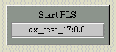
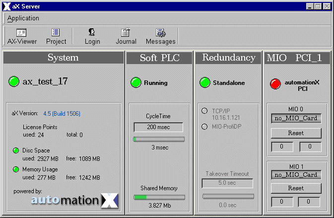

| ax_start_pls |
The ax_start_pls allows you to start the
PLS. The ax_start_pls class is necessary at the Client-Installation, when
the user wants to see the aX-Server window. Else the user is only able
to operate with the aX-Viewer.
Features | Installation | User Interface | Implementation Notes
The ax-start_pls class is comprised of the
following components (files):
| Class Component | Description | File Name(s) |
| Class File | Includes the process picture representation and any popup menus. | ax_start_pls.symbol
|
| HTML-Document | HTML document for Online Help. | ax_start_pls.htm |
Installation: The
above listed files must be copied into a common sub-directory within the
project's "classlib" directory. The name of the common directory can be
chosen freely.
Features | Installation | User Interface | Implementation Notes
The graphical representation contents the hostname.

Figure 1: Graphical Representation
By clicking on the graphical representation the aX-Server window with the essential information will appear.

Figure 2: aX-Server window
Features | Installation | User Interface | Implementation Notes
Features | Installation | User Interface | Implementation Notes